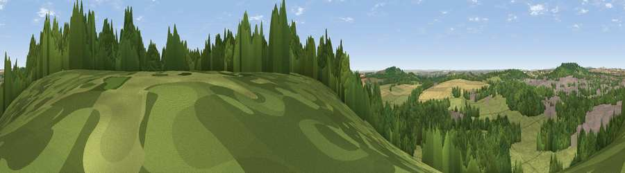

Viewpoint near Shipton Bellinger
#21491 in England · top 31% of its area beats it · near Shipton BellingerThe view, rendered

A 360° render of this exact spot computed from the terrain model, tree cover and land cover — summer colours, afternoon light, calibrated against photographs of famous viewpoints. Real trees, hedges and buildings will differ in detail.
The panorama
Grey silhouette: terrain skyline in each direction (720 bearings, Earth curvature and refraction included). Dashed green: skyline with trees (+15 m) and buildings (+8 m) as obstacles. Blue strip: how far the ground is visible on each bearing.
Where the view opens
Wedge length = distance to the farthest visible ground on that bearing (vegetation-aware). Rings at 10, 25 and 50 km.
What fills the view
42% grassland · 40% woodland · 9% built-up · 8% cropland
Angular shares of the visible panorama (visual magnitude), not map area. Landscape diversity 0.50 (0–1 Shannon).
Key numbers
More beautiful places nearby
The staircase of upgrades: each row has a higher view potential than everything closer. Driving times are estimates from straight-line distance, calibrated against real road routing — check an actual route before setting out.
| Place | Direction | Drive | Score |
|---|---|---|---|
| Viewpoint near Shipton Bellinger | E · 1 km | ~4 min | 53.6 |
| Viewpoint near Shipton Bellinger | SSE · 2 km | ~5 min | 61.0 |
| Viewpoint near Cholderton | SW · 5 km | ~11 min | 61.6 |
| Viewpoint near Bulford | SW · 6 km | ~13 min | 70.3 |
| Viewpoint near Oare | NNW · 18 km | ~31 min | 72.9 |
| Martinsell viewpoint | NNW · 18 km | ~31 min | 77.3 |
| Viewpoint near Berwick St John | SW · 41 km | ~60 min | 78.2 |
| Viewpoint near Buriton | ESE · 55 km | ~77 min | 80.0 |
51.22148, -1.66023 · source: screening · position refined by local search. Computed location — check access rights before visiting.